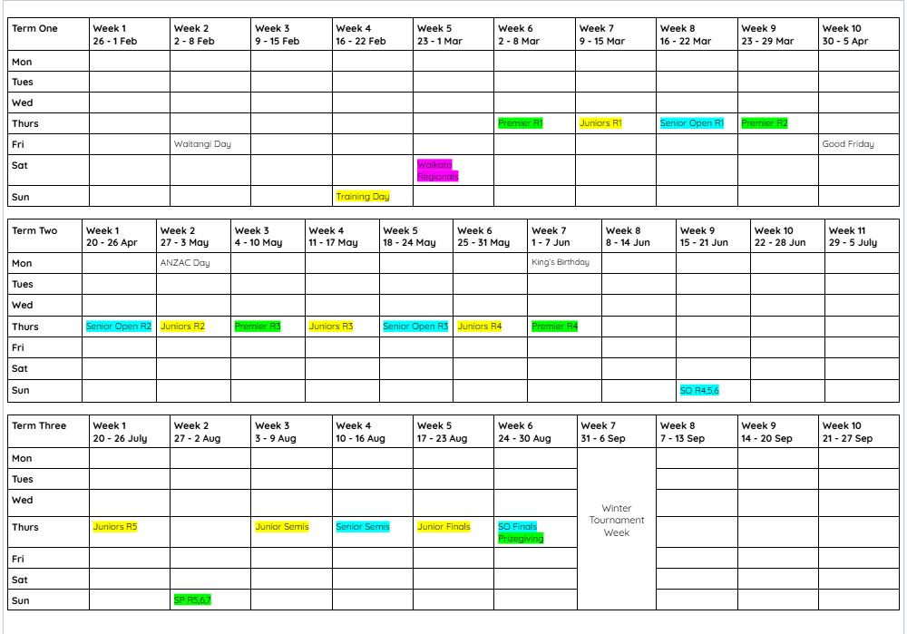

We have meetings once every week:
For Junior Debate -The meetings are every Thursday Lunch break in H21 classroom
For Senior Open Debate - The meetings are every Day 2 Lunchtime in H22 Classroom
For Senior Premier Debate - The meetings are every Day 7 Lunchtime in H22 Classroom
All the debate comepetitions will be held in University of Waikato, in the T block building. Room - TT.2.26.
You need to use Gate 4 to enter. You can use this map link to help you University of Waikato Map
You can use the calendar to check when your Debate Rounds are.
There are many events and comepetitions that go on through out the whole year.
We have three different leagues in which students from different high schools verse in for prizes.
- Junior Debate is for Year 9 and 10's who are new to debating but would like to compete with other schools and gain experiences.
To find the motion hints and draws for Junior Debate you can use this link : Waikato Schools' Debating Juniors Annual Championship 2026
- Senior Open Debate is for seniors (Year 11-13) who are wanting to participate in debate for fun experiences but do not wish to be competitive. Senior Debating is very different from Juniour Debating. So if you are new to Senior Debating it is recommended that you join Senior Open for the first year and then move on to Senior Premier next year.
To find the motion hints and draws for Senior Open Debate you can use this link : Waikato Schools' Debating Senior Open Annual Championship 2026
- Senior Premier Debate is for seniors (Year 11-13) who enjoy competitive environment and have advanced debate skills.
To find the motion hints and draws for Senior Premiere Debate you can use this link : Waikato Schools' Debating Senior Premiere Annual Championship 2026
You can use the calendar to check when your Debate Rounds are.